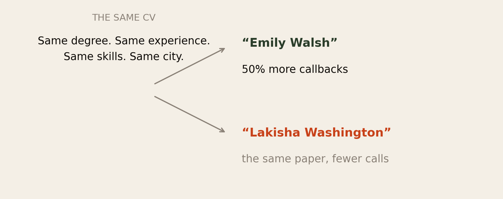
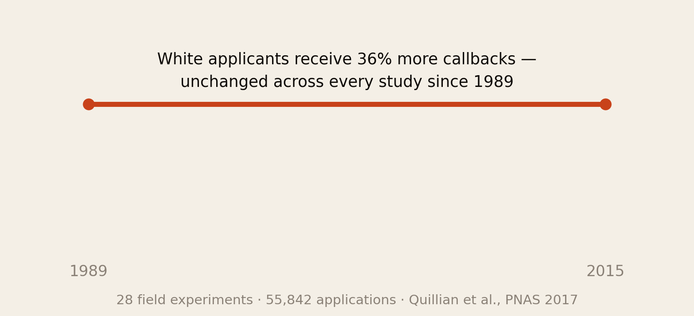
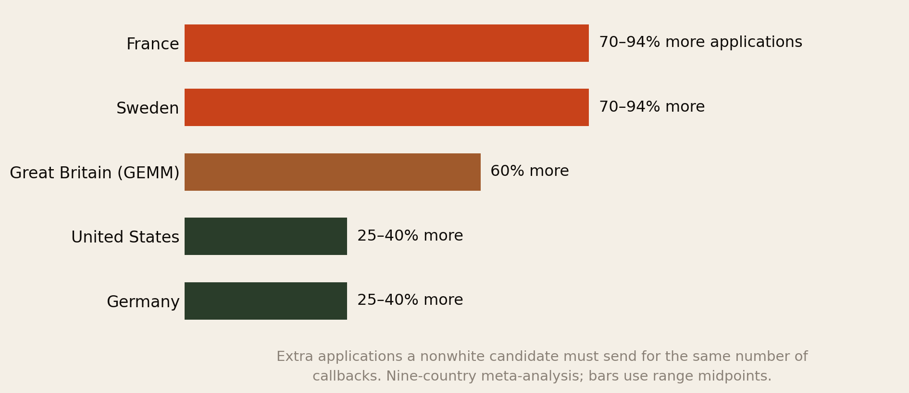
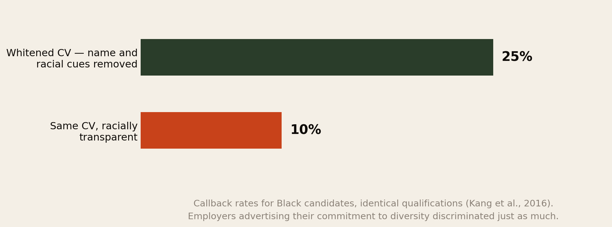
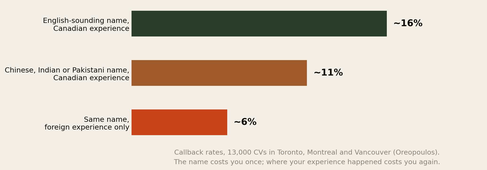
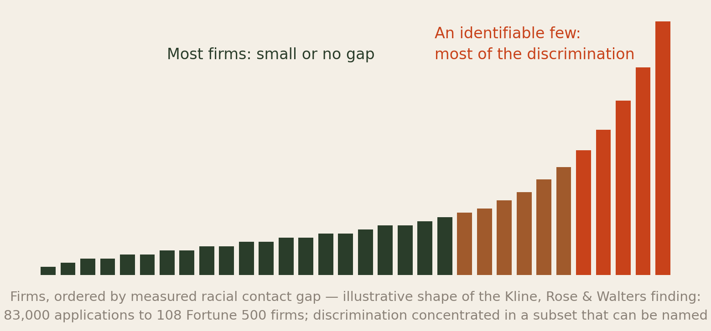

The Name on the CV.
For thirty years, researchers have run the same experiment: send employers identical CVs with different names, and count who gets called. It is the closest thing social science has to a controlled trial of prejudice, and the results are among the most replicated in the field. This report is what those experiments found — and what a candidate can actually do with it.
Section 01The Short Version
Every African abroad has wondered it, usually at 11pm after the fortieth silent application: is it the CV, or is it my name? This is one of the very few questions in this library where science has a direct, experimental answer.
- The name effect is real, large and causal. In the founding experiment, identical CVs with white-sounding names received 50% more callbacks than the same CVs with Black-sounding names. This is not a survey or an anecdote — the CVs were fictional and the names randomly assigned, so nothing else can explain the gap.
- It has not improved. A meta-analysis of every US field experiment since 1989 — 28 studies, 55,842 applications — found no change in discrimination against Black applicants over 25 years. Whites receive on average 36% more callbacks.
- Where you apply matters enormously. Across nine countries and 200,000+ applications: in France and Sweden, a nonwhite candidate needs 70–94% more applications for the same callbacks. In Germany and the US, 25–40%. The gap between the worst and best country is more than threefold.
- Britain measured it for Africans specifically. In the GEMM experiment, minority applicants needed 60% more applications; for Black African applicants, the odds of a callback were less than half those of an identical white British applicant — including for candidates born and educated in Britain.
- “Whitening” measurably works, which is its own indictment. Black candidates who scrubbed racial cues from their CVs got 25% callbacks against 10% for the untouched version. Employers with pro-diversity statements discriminated just as much.
- The name is only half the bill. In 13,000 Canadian CVs, an English name beat an Asian name by ~40% — but where the experience happened mattered even more. Foreign-only experience roughly halved callbacks again. The market discounts your name once and your career’s geography twice.
- And it is concentrated. In 83,000 applications to 108 Fortune 500 firms, most companies showed small gaps — while an identifiable subset accounted for most of the discrimination. That is bad news about those firms and genuinely useful news for a candidate: the screen is not uniformly hostile.
You were never imagining it. The silence has been measured, in controlled experiments, for thirty years. The rest of this report is about what to do inside that fact.
Section 02How We Know
Before the numbers, the method — because the method is why this evidence is unusually hard to dismiss.
A correspondence study works like this. Researchers write fictional CVs — realistic, matched in every detail. They send them to real job postings, randomly assigning names that signal race or origin: one employer receives “Emily Walsh,” the next receives the identical document as “Lakisha Washington” or “Adebayo Okonkwo.” Then they count callbacks.
Because the applicants do not exist and the names are assigned by lottery, nothing differs between the piles except the name. Not education, not experience, not the quality of the writing, not confidence in an interview — there is no interview. Any gap in callbacks has exactly one available explanation.
- It is a true experiment, with random assignment — the same design standard as a drug trial.
- It measures behaviour, not attitudes. No one is asked whether they discriminate. Their inbox answers.
- It has been replicated for decades, in dozens of countries, across hundreds of thousands of applications, by rival teams — and the direction of the finding has never reversed.
One honest boundary, which Method returns to: correspondence studies measure the first screen only — the decision to call. What happens in interviews, offers and salaries is beyond their reach. Everything in this report is about the doorway, not the room.
Section 03The Founding Experiment

In 2001–2002, economists Marianne Bertrand and Sendhil Mullainathan answered help-wanted ads in Boston and Chicago with fictional CVs, randomly assigning white-sounding names (Emily Walsh, Greg Baker) or Black-sounding names (Lakisha Washington, Jamal Jones). The paper’s title became famous because its question was so plain: Are Emily and Greg more employable than Lakisha and Jamal?
They were. White names received 50% more callbacks for interviews.
The second finding is less quoted and, for this audience, more important. The researchers also varied CV quality — more experience, fewer gaps, extra skills. Improving the CV helped white names substantially and Black names much less. The market rewarded Emily for being excellent and largely ignored the same excellence from Lakisha.
Read that carefully, because it breaks the advice every immigrant parent gives: “be twice as good.” The experiment found that being twice as good is precisely what the screen fails to see.
It does not mean effort is pointless — later sections show where it pays. It means effort aimed at the CV pile is aimed at the one place where the return is documented to be lowest.
Section 04Twenty-Five Years, No Change

Individual studies can be lucky. So in 2017 a team led by Lincoln Quillian gathered every available US field experiment since 1989 — 28 studies, 55,842 applications for 26,326 positions — and asked whether hiring discrimination against Black applicants had declined across a generation of diversity offices, legislation and public commitments.
It had not moved. Whites received on average 36% more callbacks than African Americans, and the gap in 2015 was statistically indistinguishable from the gap in 1989. (Discrimination against Latinos showed a modest decline; against Black applicants, none.)
Two implications for anyone building a career abroad:
- Do not price in progress. A generation of corporate diversity effort left the callback gap intact. Whatever changed in those decades, the first screen was not it. Plan for the market as measured, not as advertised.
- This is a structural constant, not a passing mood. Which means the useful question shifts from “when will it end?” to “where is it weakest, and how do I route around it?” — the subject of the rest of this report.
Section 05Where It Is Worst

The most practically useful finding in the entire literature: the same nonwhite candidate faces radically different screens in different countries.
Across nine North American and European countries, discrimination was found everywhere — but at very different intensities. In France, the worst measured market, the white-native advantage is more than three times what it is in Germany, the lowest. In France and Sweden a minority candidate must send 70–94% more applications to receive the same responses; in Germany and the US, 25–40% more.
Three readings worth taking seriously, and one caution.
- This belongs in your destination arithmetic. Our succeeding-abroad report ranked countries by pay gaps and settlement clocks. This adds a third axis: how the front door treats your name. A market with a slightly lower salary and a Germany-grade screen can beat one with a higher salary behind a France-grade screen.
- It reframes the French paradox in our own research. France hosts more African students and residents than any other single country — and runs the most hostile measured CV screen in the West. Presence and access are different things.
- Sweden is the surprise. Reputation for progressive politics; screen measured alongside France’s. Reputation is not data.
- The caution: country effects partly reflect application formats (German applications traditionally carry far more information, which can dilute the name’s signal) and which minorities were tested. Treat the ordering as robust and the exact figures as ranges.
Section 06The British Numbers
Most of the American evidence tests African-American names. The British GEMM experiment (2016–17, by Valentina Di Stasio and Anthony Heath) is the study that tested this network’s situation directly: applications in the name of candidates of Nigerian and other specific origins, sent to real British vacancies.
- Ethnic minority applicants as a group needed 60% more applications than white British applicants to get the same number of positive responses.
- For a Black African applicant, the odds of a callback were less than half those of an otherwise identical white British applicant.
- The penalty applied to candidates who were born, raised and educated in Britain. A British degree, British experience and a British accent on the phone do not remove it, because the screen never gets that far — it stops at the name.
That last point deserves a moment, because it answers a question second-generation members ask constantly: surely it’s different for us? On the evidence, at the CV stage, it is not. The document is read before the person exists. Our earnings-gap research found that most of the African pay penalty is about which jobs people get, not unequal pay within jobs — and this is the mechanism at the very front of that pipeline: the gap begins before anyone has met you.
Section 07The Whitening Experiment

If the name drives the gap, removing the name should close it. In 2016, researchers tested exactly that — and documented what many candidates were already quietly doing.
“Whitened” CVs — name anglicised or initialised, racially identifiable associations and awards reworded — received 25% callbacks. The identical, racially transparent versions received 10%. Two and a half times the response, for the same person, minus their identity.
The study’s second finding may be its most important, and it is bleak. The researchers checked whether employers whose job ads advertised a commitment to diversity punished the transparent CVs less. They did not — their callback gaps were just as large. Worse, candidates trusted those statements: they whitened less when applying to pro-diversity employers, and so were exposed more. The researchers called it the diversity paradox.
The diversity statement is marketing, not measurement. On the evidence, it predicts nothing about how the screen will treat your name — except that you will trust it more than you should.
What this report does not do is tell you to whiten. That choice — its costs as well as its measured benefits — is treated honestly in Section 11 and Section 13.
Section 08The Foreign-Experience Discount

The name is not the only signal on the page. Philip Oreopoulos sent roughly 13,000 CVs across Toronto, Montreal and Vancouver and separated two penalties most people experience as one.
The name penalty: with identical Canadian qualifications and Canadian experience, English-sounding names were called back about 40% more often than Chinese, Indian or Pakistani names (~16% vs ~11%).
The geography penalty: keep the name and swap the experience. CVs whose work history was foreign-only fell to roughly 6% — while adding Canadian experience to the same named candidate pulled callbacks back up to ~11%. Employers barely credited work done elsewhere, whatever its quality; a Lagos bank and a Toronto bank are, to the screen, different species.
For a newly arrived professional this is the single most actionable chart in the report, because the geography penalty is the one you can retire. You cannot change your name without cost, but one local contract, one local project, one recognised local credential converts the entire document from “foreign CV” to “local CV with extra depth.” It is also, mechanically, why the first job abroad is so much harder than the second — something our four-rungs research found from the earnings side.
Section 09It Is Concentrated

The newest generation of experiments asked a sharper question: is discrimination spread evenly, or driven by particular employers? A Berkeley–Chicago team sent 83,000 fictional applications to 108 Fortune 500 companies and measured each firm’s gap separately.
On average, distinctively Black names reduced employer contact by 2.1 percentage points. But the average hid the real result: the gaps varied enormously between firms, and systemic discrimination was concentrated in a specific, statistically identifiable subset of companies — some of which the researchers publicly named in a follow-up “discrimination report card.” Federal contractors, subject to audit, discriminated measurably less.
Three things follow:
- The market is not uniformly hostile. Most large firms in the study showed small or statistically undetectable gaps. The despairing conclusion — “they are all the same” — is measurably false, and strategically expensive if it stops you applying.
- Where firms are accountable, the gap shrinks. Audit exposure and centralised, structured HR predicted less discrimination. That is a fact you can select on: large regulated employers, government, and audited institutions are statistically safer doors than un-audited ones.
- The naming of firms matters. For the first time, discrimination carries firm-level reputational risk. Expect this to grow — and to be worth checking before you spend your applications.
Section 10What Does Not Work
The obvious policy fix — take the name off the CV — has been tried at national scale, and the result is a warning about obvious fixes.
France ran a large randomised trial of anonymous CVs (CV anonymes) with about a thousand firms. The expectation was that hiding names would raise minority callbacks. The measured result was the opposite: participating firms became less likely to interview and hire minority candidates under anonymisation, and the government abandoned the policy in 2015.
The post-mortem identified two mechanisms, both instructive. The firms that volunteered were disproportionately those already favourable to minority candidates — and anonymisation stopped them favouring anyone. And hiding the name also hides context that helps: a screener who can see a candidate is an immigrant can read an employment gap or a foreign school charitably; anonymised, the gap is just a gap.
The lesson is not that nothing works. It is that the screen cannot be tricked into fairness by deleting information — what works, on the evidence, is changing who does the screening, what they are told to look for, and whether anyone audits the result. That is Section 12’s subject.
Section 11The Toolbox
![Five items: referrals bypass the pile entirely, since discrimination happens at the CV screen and a warm introduction skips it; target the firms with clean records, since discrimination is concentrated and federal contractors discriminate less; get the local line on the CV fast, since one local role reprices the whole document; certifications that machines read give screeners a reason that overrides the name; and the whitening question is yours to answer, since it measurably works at 25 versus 10 percent but costs something no study can measure.](img/toolbox.png)
Everything above is measurement. Here is what it implies, ordered by the strength of the evidence behind it.
- Referrals do not fix the screen — they skip it. Every result in this report happens at the anonymous first read of a document. A warm introduction moves you past the exact stage where the discrimination lives. This is the strongest single implication of the whole literature, and it is why a functioning network — which is what this Forum exists to be — is not a nice-to-have but a documented counter-measure.
- Spend applications where the odds are best. Discrimination is three times worse in some countries than others (Fig 3) and concentrated in identifiable firms (Fig 6). Large audited employers, public-sector bodies and federal contractors run measurably fairer screens. Sixty applications aimed well beat a hundred sprayed.
- Kill the geography penalty first. It is the largest penalty you can actually remove (Fig 5). Prioritise anything that puts a local employer’s name on the document — a short contract, a recognised local certification, even structured volunteering — ahead of polishing a foreign-only history.
- Put machine-readable proof above the fold. The founding study showed extra quality is under-rewarded for minority names — but recognised local credentials are the exception, because they give a hesitant screener a legible reason. A known local certification outperforms two paragraphs of self-description.
- On whitening: we will not decide for you. The evidence is that it works — 25% against 10% — and that no diversity statement protects the transparent version. It is also a tax paid in identity, levied on exactly the people who did nothing wrong; and our language research shows the name is often the last inheritance a diaspora family keeps. Some members initialise a first name and keep the surname whole; some refuse entirely, treating the name as a filter against employers they would not want; some cannot afford that filter this year and choose the callbacks. All three are rational. The only wrong move is not knowing the numbers when you choose.
Section 12If You Are the One Hiring
A growing share of this network sits on the other side of the pile — founders, team leads, HR. The same literature that measures the problem measures what reduces it, and none of it is a poster.
- Structure beats sentiment. Discrimination lives in unstructured judgement calls. Defined criteria set before CVs are opened, scored consistently, shrink the space where a name can operate. The Kline results point the same way: firms with centralised, rule-bound HR discriminated least.
- Test work, not paper. A short skills task moves the decision from “does this CV feel right?” — where names do their damage — to “can this person do the thing?”, where they cannot.
- Audit your own funnel. The French experiment failed partly because nobody could see what screeners were doing. Count callbacks by name type in your own pipeline once a quarter. Firms that measure, behave — that is the federal-contractor result in miniature.
- Do not confuse your statement with your screen. The whitening study’s employers surely believed their diversity language. Their inboxes disagreed. Yours might too, until you count.
- And check your own in-group. An African founder’s pile has its own gravity — toward kin, church, ethnicity, accent. The mechanism in this report is human, not white. If the screen is unstructured, someone’s name is paying for it, including in Lagos and Nairobi.
Section 13The Uncomfortable Part
First, every mitigation in this report taxes the victim. Network harder, target smarter, re-credential locally, consider your own name — each is work assigned to the person who did nothing wrong, to route around behaviour that is in many of these jurisdictions illegal. This report gives you the toolbox because you need it this year; it declines to pretend the toolbox is justice. The actual fix — audits, structured hiring, enforcement — belongs to employers and states, and Section 9 shows it works when applied.
Second, the “be twice as good” covenant is broken, and we should say so. The founding experiment found excellence under-rewarded for the wrong name; the British data found the penalty untouched by British birth and British degrees. Effort is not pointless — but effort aimed at the pile is effort aimed at the screen’s blind spot. The generation that taught us to be twice as good was not wrong about the world; it was optimistic about which door the effort opens.
Third, the name is not the problem, and the framing matters. Everything in this literature is a measurement of employer behaviour; it is routinely misread as advice that African names are liabilities to be managed. Our shame research described systems that punish people for what they are rather than what they did — this is one, industrialised. Whether you whiten a CV is a tactical question. Whether your name is a defect is not a question at all.
The experiments prove the bias sits in the reader, not the name. Plan for the reader you have — and refuse the conclusion that anything about your name needed forgiving.
Section 14Method & Limits
This report reviews the published correspondence-study literature as at 24 August 2026, selected for scale, replication and relevance to Africans abroad.
- Callbacks are not jobs. Every result here measures the first screen — the decision to make contact. Discrimination at interview, offer and salary stages is real but largely outside this method’s reach, so these figures are best read as a floor on the total penalty, not the total.
- Most US studies test African-American names, not African ones. “Lakisha” and “Adebayo” are different signals, and the US evidence transfers to African immigrants by inference, not measurement. The studies that test this network’s situation most directly are GEMM (Nigerian-origin applicants in Britain) and Oreopoulos (immigrant names and foreign credentials in Canada). We have leaned on those where the distinction matters.
- Fig 3 mixes sources and eras. The nine-country figures are from the 2019 meta-analysis; the British 60% is from the single GEMM experiment; bars plot range midpoints. Country comparisons are also complicated by different application formats and different minority groups tested. The ordering is robust; the decimals are not.
- Fig 5’s rates are approximate, drawn from across Oreopoulos’s study waves; the finding is the ordering and the rough magnitudes, not the exact percentages.
- Fig 6 is an illustration. The Kline, Rose & Walters concentration finding is real and quantified in their papers; our bar chart depicts its shape, not their data.
- Fictional applicants mean entry-level bias. Correspondence studies necessarily test junior-to-mid roles filled through open applications. Senior hiring runs through networks and search firms, where the same forces are plausible but unmeasured by this method.
- AI screening is the open frontier. Most of this evidence predates algorithmic CV filtering at scale. Early audits of automated screens show name and proxy effects can persist or amplify, but the literature is young and we have not leaned on it.
- Publication bias runs both ways. Null results are less publishable; the meta-analyses attempt corrections, and the headline gaps survive them. We cite the meta-analyses rather than the most dramatic single studies wherever possible.
- Nothing here is legal advice. Name-based hiring discrimination is unlawful in the US, UK, EU and Canada. Documenting a pattern in your own applications may be actionable; an employment lawyer, not this report, is the right reader of your specific case.
Principal sources: Bertrand & Mullainathan, American Economic Review (2004); Quillian, Pager, Hexel & Midtbøen, PNAS (2017); Quillian, Heath, Pager, Midtbøen, Fleischmann & Hexel, Sociological Science (2019); Zwysen, Di Stasio & Heath on the GEMM experiment, Sociology (2021); Kang, DeCelles, Tilcsik & Jun, ASQ (2016); Oreopoulos, NBER (2009/2011); Kline, Rose & Walters, QJE (2022) and their Discrimination Report Card; Behaghel, Crépon & Le Barbanchon on anonymous CVs in France (J-PAL).
Companion reports: How Long Until It Was Worth It?, What Will People Say? and Three Generations to Silence.
The diaspora helps the diaspora.
Africa Global Forum is a peer network for Africans abroad — help each other, sit together, and bounce ideas. This research is part of an open library, free to read and share.